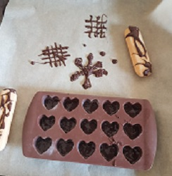

Schokodekorationen
Zubereitungszeit: 15min
Kühlzeit: 2 Stunden

- 100g Schokolade
- etwas Glitzerpulver
- Schokolade kleinhacken und schmelzen
- In eine Spritztüte oder einen Stift füllen
- Herzformen mit Glitzerpuder bestäuben
- Schokolade dünn in die Herzformen geben
- Mit der Restlichen Schokolade zum Beispiel Raster malen. Dabei vorher planen und schnell malen für suabere Linien